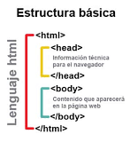

Main Content
1. Objetivos del curso
Comprender sistemas de control de versiones como GIT o GITHUB, para compartir y publicar archivos en formato HTML5 y CSS3, a través de linea de comando o por medio de la consola gráfica de GitHub Desktop.
Desarrolla sitios web en formato HTML5 y CSS3, para ser visualizados en diferentes navegadores teniendo en cuenta su funcionabilidad y usabilidad, por medio del uso de diferentes editores de código propuestos en el desarrollo del curso.
Evalua sitios web y da un plan de mejoramiento, por medio del uso de diferentes metodologías y herramientas especializadas en linea, para su respectiva validación y ajustes pertinentes.
2. Objetivos del OVI
Crear repositorios locales y remotos, de igual manera clonar cada uno de ellos utilizando GIT y GITHUB.
Identificar Estructura básica, lista, contenido y maquetación de páginas HTML.
Comprender los etilos internos y externos de CSS3, los selectores de CSS sus propiedades básicas y múltiples clases.
